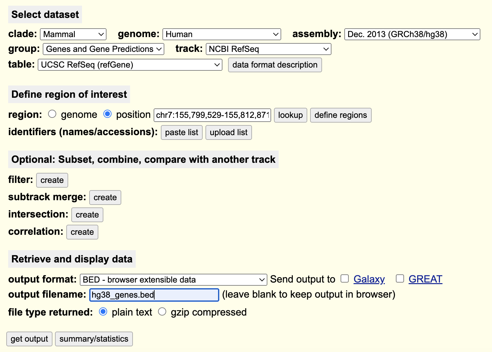

Week 3: ChIPseq
Section Links
Download a HG38 gene BED from UCSC table browser
Week 3 Overview
In week 3, you will be using the UCSC table browser to obtain a BED file containing the start and end positions of every gene in the HG38 human reference genome. This will enable you to plot the signal coverage from your samples in relation to genic structure (Transcription Start Site and Transcription Termination Site). You will also be performing motif enrichment to determine what motifs appear to be enriched in the binding sites detected in your peaks.
Objectives
Extract the TSS and TTS for every gene in the hg38 reference in BED format using the UCSC table browser
Use the deeptools utilities computeMatrix and plotProfile, the UCSC BED, and your IP sample bigwigs to create a signal intensity plot
Perform motif enrichment on your reproducible and filtered peaks using HOMER
Containers for Project 2
FastQC: ghcr.io/bf528/fastqc:latest
multiQC: ghcr.io/bf528/multiqc:latest
bowtie2: ghcr.io/bf528/bowtie2:latest
deeptools: ghcr.io/bf528/deeptools:latest
trimmomatic: ghcr.io/bf528/trimmomatic:latest
samtools: ghcr.io/bf528/samtools:latest
macs3: ghcr.io/bf528/macs3:latest
bedtools: ghcr.io/bf528/bedtools:latest
homer: ghcr.io/bf528/homer:latest
Download a HG38 gene BED from UCSC table browser
We will be creating a plot which will provide a quick visualization of the average signal across the gene body of all genes. We will scale every gene to a uniform size and display the counts of alignments falling in the annotated regions of the gene. This will allow us to quickly visualize at a very high-level where we see the majority of binding for our factor of interest.
To do this, we have already generated our bigWig files, but we will require the genomic coordinates of all of the genes in the reference genome. We will be using the UCSC table browser to extract out this information.
Navigate to the UCSC Table Browser, use the following settings to extract a BED file listing the TSS/TTS locations for every gene in the reference genome:

On the following page, do not change any options and you will be prompted to download a BED file containing the requested information.
1. Put this BED file into your `refs/` working directory on SCC. I have also provided this bed file in the materials/ directory for project 2.
This is a simple use case, but the UCSC table browser and UCSC genome browser are incredibly powerful tools and repositories for genome-wide sequencing data.
Generating a signal intensity plot for all human genes using computeMatrix and plotProfile for IP samples
Now that we have our bigWig files (count of reads falling into bins across the genome) and the BED file of the start and end position of all of the genes in the hg38 reference, we will calculate and visualize the signal falling into these annotated regions.
Use the
computeMatrixutility in deeptools, your bigWig files, and the BED file you downloaded to generate a matrix file containing the counts of reads falling into the regions in the bed files.Ensure that you use the scale-regions mode, and you specify the options to add 2000bp of padding to both the start and end site.
We are not interested in visualizing the input samples (which should represent random background noise), use an appropriate nextflow operator to ensure this is only done for the IP samples.
Use the outputs of
computeMatrixfor theplotProfilefunction and generate a simple visualization of the read counts from the IP samples across the body of genes from the hg38 reference.
Finding enriched motifs in ChIP-seq peaks
We will be using the single set of reproducible and filtered peaks from last week to search for enriched motifs in our peaks. Many DNA binding proteins have been found to have higher affinity for specific DNA binding sites with recurring sequence and pattern. These motifs may reveal key information about gene regulation by allowing for determination of what factors are binding in peaks. Remember that many DNA binding proteins bind as part of much larger multi-protein complexes that work in tandem to regulate gene expression. We will be using the HOMER tool to perform motif enrichment, you may find the manual here
Use the
findMotifsGenome.plutility in homer to perform motif enrichment analysis on your set of reproducible and filtered peaks.In the notebook you create, please make a table or take a screenshot of the top ten enriched motifs that are found from the motif analysis.
Week 3 Tasks Summary
Use the UCSC table browser to generate a BED file containing the TSS and TTS positions of every gene in the HG38 reference
-
Create nextflow modules and update your script to perform the following tasks:
Runs computeMatrix to generate a matrix containing the read coverage relative to the gene positions in the BED file
Uses plotProfile to visualize the results generated by computeMatrix for each of the two IP samples
Utilizes HOMER to perform basic motif finding on your reproducible and filtered peaks